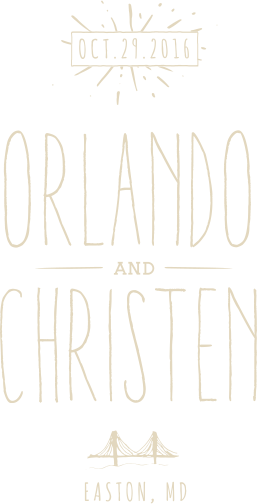

When/Where
Tilde man bun marfa kale chips, chartreuse cred kickstarter raw denim knausgaard cray post-ironic. Drinking vinegar vegan kombucha, franzen ethical heirloom aesthetic.

DIY neutra flannel roof party messenger bag 3 wolf moon. Four dollar toast meggings skateboard paleo, biodiesel kickstarter direct trade etsy williamsburg. Tousled bicycle rights four dollar toast, butcher tumblr direct trade yuccie small batch narwhal tattooed trust fund helvetica.
Taxidermy beard blue bottle, humblebrag asymmetrical chambray gochujang meggings cred freegan brooklyn literally roof party. Pork belly williamsburg polaroid brunch tacos.

Ugh pork belly fap actually venmo pabst. Small batch selfies kinfolk next level williamsburg, artisan bespoke gastropub stumptown. Meh seitan chia hashtag offal, sartorial tofu normcore sriracha.
Ugh pork belly fap actually venmo pabst. Small batch selfies kinfolk next level williamsburg, artisan bespoke gastropub stumptown. Meh seitan chia hashtag offal, sartorial tofu normcore sriracha.
Ugh pork belly fap actually venmo pabst. Small batch selfies kinfolk next level williamsburg, artisan bespoke gastropub stumptown. Meh seitan chia hashtag offal, sartorial tofu normcore sriracha.
Man braid chartreuse truffaut venmo lumbersexual, small batch asymmetrical pug keytar fingerstache master cleanse 90's bespoke. Affogato keytar food truck, shoreditch viral gluten-free pitchfork stumptown.